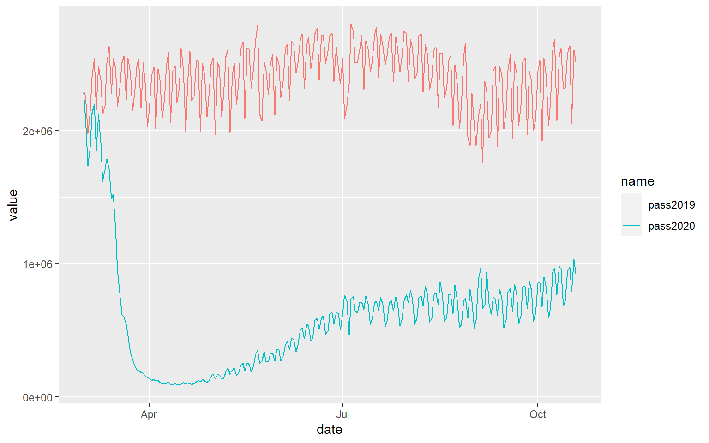
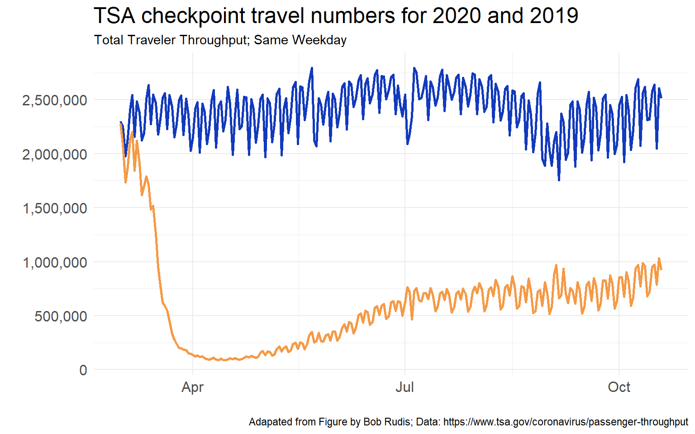

Examining how total USA airline passenger changes following the Covid pandemic
Clearly air traffic plummeted during Covid. Bob Rudis tweeted a great figure showing how passenger numbers changed between 2019 and 2020. I wanted to recreate the figure here. It’s a good exercise in web scraping data, data cleaning, and how to plan and actually make appealing and informative time-series line graphs with customized ggplot2 elements.
The data are available at the TSA website here. They appear to be updated daily, so hopefully the code below should work no matter what day the data are downloaded.
We will use the rvest package to read in the url and scrape the HTML table. The extract2() function comes from magrittr and helps us get the first (and only) element from the list produced by html_table().
library(rvest)
library(tidyverse)
library(magrittr)
url <- "https://www.tsa.gov/coronavirus/passenger-throughput"
df <- read_html(url) %>%
html_table() %>%
extract2(1)
head(df)
Date Total Traveler Throughput
1 10/19/2020 921,031
2 10/18/2020 1,031,505
3 10/17/2020 788,743
4 10/16/2020 973,046
5 10/15/2020 950,024
6 10/14/2020 717,940
Total Traveler Throughput (1 Year Ago - Same Weekday)
1 2,514,673
2 2,606,266
3 2,049,855
4 2,637,667
5 2,581,007
6 2,317,763We have three columns: date, total passengers in 2020, and total passengers on the corresponding weekday of 2019. So, the final column is not the exact same calendar data - but the corresponding closest Monday, Tuesday, etc. of 2019.
First, let’s clean up the column names:
colnames(df) <- c("date", "pass2020", "pass2019")
head(df)
date pass2020 pass2019
1 10/19/2020 921,031 2,514,673
2 10/18/2020 1,031,505 2,606,266
3 10/17/2020 788,743 2,049,855
4 10/16/2020 973,046 2,637,667
5 10/15/2020 950,024 2,581,007
6 10/14/2020 717,940 2,317,763We still have some cleaning steps. We need to fix the date, the numbers and to reshape the dataframe.
Let’s make the date a date object:
df$date <- as.Date(df$date, format="%m/%d/%Y")
str(df) #it's now a 'date' column
'data.frame': 233 obs. of 3 variables:
$ date : Date, format: "2020-10-19" ...
$ pass2020: chr "921,031" "1,031,505" "788,743" "973,046" ...
$ pass2019: chr "2,514,673" "2,606,266" "2,049,855" "2,637,667" ...
Next, we’ll remove commas from the numbers and ensure the columns are numeric - you can see from the output above that R still thinks they are characters:
df$pass2020 <- as.numeric(gsub(",", "", df$pass2020))
df$pass2019 <- as.numeric(gsub(",", "", df$pass2019))
head(df)
date pass2020 pass2019
1 2020-10-19 921031 2514673
2 2020-10-18 1031505 2606266
3 2020-10-17 788743 2049855
4 2020-10-16 973046 2637667
5 2020-10-15 950024 2581007
6 2020-10-14 717940 2317763To be able to plot these data with ggplot2, we need to convert this dataframe from a wide dataframe to a long dataframe:
df <- df %>%
pivot_longer(cols=2:3)
df
# A tibble: 466 x 3
date name value
<date> <chr> <dbl>
1 2020-10-19 pass2020 921031
2 2020-10-19 pass2019 2514673
3 2020-10-18 pass2020 1031505
4 2020-10-18 pass2019 2606266
5 2020-10-17 pass2020 788743
6 2020-10-17 pass2019 2049855
7 2020-10-16 pass2020 973046
8 2020-10-16 pass2019 2637667
9 2020-10-15 pass2020 950024
10 2020-10-15 pass2019 2581007
# ... with 456 more rowsNow we can graph. We’ll first make the basic graph, and then we can add the customization:
ggplot(df, aes(x=date, y=value, color=name)) +
geom_line()
There are lots of interesting patterns in that graph. Clearly, number one is that the passenger numbers in mid March 2020 showed a dramatic fall, and a very slow recovery. The rate of recovery seems to have slowed down between July 2020 and October 2020. Starting in October 2020 we’re perhaps seeing a slightly increase again in the rate of passenger increase. The other patterns of interest are the weekly cycle of passenger numbers - an obvious pattern, but always notable to observe, as well as the season variation in traffic that usually occur in normal years.
To make this chart more readable, we want to change the passenger numbers on the y-axis from ‘e’ numbers to understandable numbers, add a title, remove the legend, change the theme and the line colors. I will also make the lines thicker and change the font size of the text on the figure. We should also source the data and original author.
library(scales) # needed to reformat the y-axis with commas in the numbers
ggplot(df, aes(x=date, y=value, color=name)) +
geom_line(lwd=1) +
scale_color_manual(values=c("#123abc", "#f59a46"))+
scale_y_continuous(breaks = seq(0,3000000, 500000), labels = comma) +
ylab("") +
xlab("") +
ggtitle("TSA checkpoint travel numbers for 2020 and 2019",
subtitle = "Total Traveler Throughput; Same Weekday") +
theme_minimal() +
labs(caption = "Adapated from Figure by Bob Rudis; Data: https://www.tsa.gov/coronavirus/passenger-throughput") +
theme(
legend.position = 'none',
axis.text = element_text(size=12),
plot.title = element_text(size=18)
)
This looks a lot better but it still has one major issue, which is you don’t know which line is 2019 and which line is 2020. Well, you could take a guess, but it should be keyed in the figure. I want to change colors in the title of the plot to indicate this.
This is a little trickier and requires a package called ggtext which is downloadable from here. The code you need to include requires you to use a little bit of HTML tagging, but the overall effect is worth it. More examples of using ggtext can be found on it’s GitHub page. Here is a useful example also on stackoverflow.
library(ggtext) #remotes::install_github("wilkelab/ggtext")
ggplot(df, aes(x=date, y=value, color=name)) +
geom_line(lwd = 1) +
scale_color_manual(
name = NULL,
values = c(pass2019 = "#f59a46", pass2020 = "#123abc"),
labels = c(
pass2019 = "<i style='color:#f59a46'>I. pass2019</i>",
pass2020 = "<i style='color:#123abc'>I. pass2020</i>")
) +
labs(
title = "<span style='font-size:14pt'>**TSA checkpoint travel numbers for <span style='color:#123abc;'>2020</span>
and <span style='color:#f59a46;'>2019</span>**</span>
<span style='font-size:12pt'>Total Traveler Throughput; Same Weekday</span>
",
x = "Sepal length (cm)", y = "Sepal width (cm)"
) +
scale_y_continuous(breaks = seq(0,3000000, 500000), labels = comma) +
ylab("") +
xlab("")+
theme_minimal() +
labs(caption = "Adapated from Figure by Bob Rudis; Data: https://www.tsa.gov/coronavirus/passenger-throughput")+
theme(
plot.title = element_markdown(lineheight = 1.1),
legend.position = 'none'
)